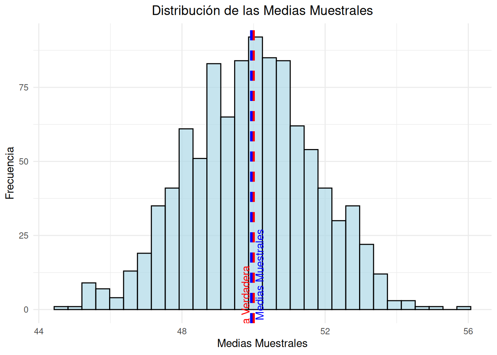
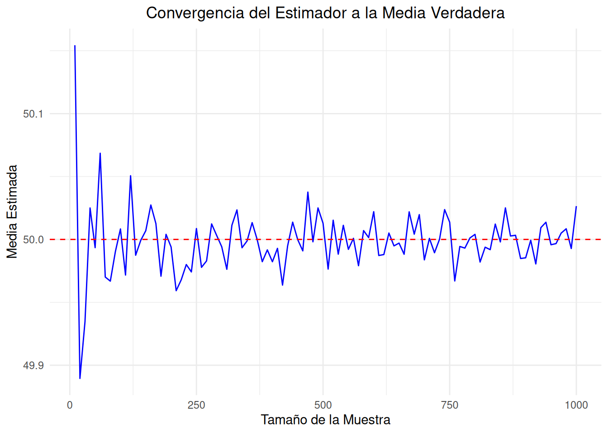
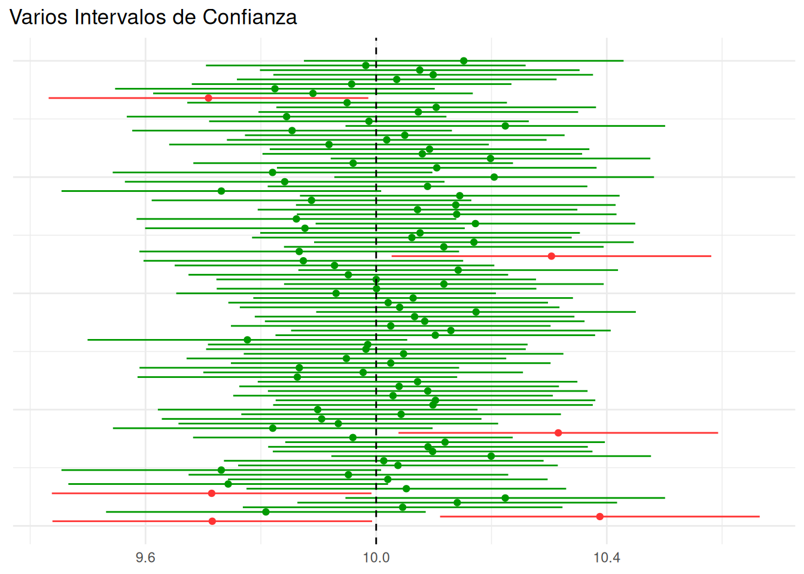

Un estadístico es una medida calculada a partir de una muestra de datos que se utiliza para describir o resumir características de la muestra. En otras palabras, un estadístico es un valor numérico que resume o describe algún aspecto de los datos recolectados. Los estadísticos se utilizan ampliamente en análisis de datos, inferencia estadística y para hacer estimaciones sobre poblaciones más grandes basadas en la información obtenida de una muestra.
Si te fijas bien, verás que en el Capítulo 2 ya hemos estado trabajando con estadísticos. Los estadísticos juegan un papel crucial en la inferencia estadística, donde se utilizan para hacer estimaciones o probar hipótesis sobre una población a partir de la información contenida en una muestra.
Ejemplos comunes de estadísticos incluyen:
Media: Promedio aritmético de los valores de una variable en la muestra.
Mediana: Valor que divide la muestra en dos partes iguales respecto a una variable.
Moda: Valor de una variable que aparece con mayor frecuencia en la muestra.
Varianza: Medida de la dispersión de los datos respecto a la media.
Desviación estándar: Raíz cuadrada de la varianza, que también mide la dispersión.
Coeficiente de correlación: Medida de la relación entre dos variables.
3.2 Estimación puntual
La estimación puntual es una técnica estadística que consiste en utilizar los datos de una muestra para calcular un valor único, denominado estimador puntual, que se usa como mejor aproximación de un parámetro desconocido de la población. Este parámetro puede ser, por ejemplo, la media, la varianza, la proporción, entre otros. La estimación puntual proporciona una forma simple y directa de hacer inferencias sobre parámetros poblacionales a partir de una muestra, aunque su simplicidad también implica que no proporciona información sobre la precisión o variabilidad de la estimación, aspectos que se abordan mediante la estimación por intervalos y otras técnicas inferenciales.
3.2.1 Conceptos clave en la estimación puntual
Estimador: Es una fórmula o función que se aplica a los datos de la muestra para obtener la estimación puntual. Por ejemplo, la media muestral (\(\bar{x}\)) es un estimador de la media poblacional (\(\mu\)). Formalmente, dada una variable aleatoria \(X\) con función de distribución \(F_\theta\), con parámetro \(\theta\) desconocido, un estadístico o estimador \(T = T(X_1,\ldots,X_n)\) es una función real de la muestra aleatoria simple (m.a.s.) \((X_1,\ldots, X_n)\) que estima el valor del parámetro desconocido. \[
T = T(X_1,\ldots, X_n) = \hat{\theta}
\] Un estadístico es una variable aleatoria, y por lo tanto, tiene asociada una distribución que se denomina distribución muestral.
Por ejemplo, la media \[T_1(X_1,\ldots,X_n)=\bar{X}=\frac{X_1+\ldots+X_n}{n}\] y la mediana \[T_2(X_1,\ldots,X_n)=\frac{X_{(n/2)}+X_{(n/2+1)}}{2}\] son estimadores.
Estimación: Es el valor numérico específico obtenido al aplicar el estimador a una muestra concreta de datos. Por ejemplo, si \(\bar{x} = 5.4\), esa es la estimación puntual de \(\mu\).
3.2.2 Ejemplos de estimadores puntuales
Media muestral (\(\bar{x}\)): Utilizada para estimar la media poblacional (\(\mu\)). Aplicamos el estimador a una realización de la muestra (\(x_1,\ldots,x_n\)), obteniendo el estimador muestral: \[
\bar{x} = T_1(x_1,\ldots,x_n)= \frac{1}{n} \sum_{i=1}^n x_i
\]
Varianza muestral (\(s^2\)): Utilizada para estimar la varianza poblacional (\(\sigma^2\)). \[
s^2 = \frac{1}{n-1} \sum_{i=1}^n (x_i - \bar{x})^2
\]
Desviación típica muestral (\(s\)). Es la raíz cuadrada de la varianza muestral. Tiene las mismas unidades de medida que la variable original.
Proporción muestral (\(\hat{p}\)): Utilizada para estimar la proporción poblacional (\(p\)). \[
\hat{p} = \frac{x}{n}
\] donde \(x\) es el número de éxitos en la muestra y \(n\) es el tamaño de la muestra.
3.3 Propiedades de los estimadores
Existen diferentes métodos para obtener estimadores de un parámetro poblacional. ¿Cómo elegir el estimador más adecuado para un parámetro desconocido? ¿Cuáles son las propiedades de un buen estimador?
Para que un estimador sea considerado adecuado, generalmente debe cumplir con ciertas propiedades:
Insesgadez: Un estimador es insesgado (o centrado) si, en promedio, coincide con el valor verdadero del parámetro que se estima. Es decir, el valor esperado del estimador es igual al parámetro poblacional.
\[E(\hat{\theta}) = \theta\] La comparaciones que implican estimadores sesgados a menudo se basan en el error cuadrático medio definido como: \[
ECM(\hat{\theta})=E[(\hat{\theta}- \theta)^2]=Var(\hat{\theta})+(E(\hat{\theta})- \theta)^2=Eficiencia+ Sesgo
\] En este grado vas a volver a oir hablar de esta medida en la asignatura de regresión. En ese caso, la medida de error más empleada es: \[
ECM=\frac{1}{n}\sum_{i=1}^n(y_i-\hat{f}(x_i))^2
\] donde \(\hat{f}(x_i)\) e sla predicción que hace un modelo de regresión mediante una función \(\hat{f}\) para la i-ésima observación muestral \(x_i\).
Consistencia: Un estimador es consistente si, a medida que el tamaño de la muestra aumenta, la estimación se aproxima al valor verdadero del parámetro. Es decir: \[
lim_{n \rightarrow \infty}P(|\hat{\theta}-\theta|\geq\delta)=0, \forall\delta>0
\] donde \(n\) es el tamaño muestral.
Eficiencia: La varianza de un estimador debe ser lo más pequeña posible. Entre dos estimadores insesgados, el más eficiente es el que tiene menor varianza, es decir, el que proporciona estimaciones más precisas.
Suficiencia: Un estimador es suficiente si utiliza toda la información contenida en la muestra sobre el parámetro que se está estimando.
Ejemplo Práctico. Insesgadez
Para entender la propiedad de insesgadez en inferencia estadística, es útil realizar una simulación en R. Como hemos visto, la insesgadez de un estimador significa que, en promedio, el estimador coincide con el parámetro verdadero de la población.
Vamos a realizar una simulación para ilustrar esta propiedad utilizando la media muestral como estimador de la media poblacional. Generaremos muchas muestras aleatorias de una distribución normal y compararemos la media de las medias muestrales con la media verdadera de la población.
# Cargar la librería ggplot2library(ggplot2)# Parámetros de la simulaciónset.seed(123) # Para reproducibilidadn_muestras <-1000# Número de muestrastamano_muestra <-30# Tamaño de cada muestramedia_poblacional <-50# Media verdadera de la poblacióndesviacion_estandar <-10# Desviación estándar de la población# Generar muestras y calcular medias muestralesmedias_muestrales <-numeric(n_muestras)for (i in1:n_muestras) { muestra <-rnorm(tamano_muestra, mean = media_poblacional, sd = desviacion_estandar) medias_muestrales[i] <-mean(muestra)}# Calcular la media de las medias muestralesmedia_de_medias_muestrales <-mean(medias_muestrales)# Imprimir resultadoscat("Media verdadera de la población:", media_poblacional, "\n")
Media verdadera de la población: 50
cat("Media de las medias muestrales:", media_de_medias_muestrales, "\n")
Media de las medias muestrales: 49.93807
# Crear un data frame para ggplotdatos <-data.frame(medias_muestrales)# Graficar las medias muestrales usando ggplot2ggplot(datos, aes(x = medias_muestrales)) +geom_histogram(bins =30, fill ="lightblue", color ="black", alpha =0.7) +geom_vline(aes(xintercept = media_poblacional), color ="red", linetype ="dashed", size =1.2) +geom_vline(aes(xintercept = media_de_medias_muestrales), color ="blue", linetype ="dashed", size =1.2) +labs(title ="Distribución de las Medias Muestrales",x ="Medias Muestrales",y ="Frecuencia") +theme_minimal() +theme(plot.title =element_text(hjust =0.5)) +annotate("text", x = media_poblacional, y =max(table(datos$medias_muestrales)) *0.9, label ="Media Verdadera", color ="red", angle =90, vjust =-0.5) +annotate("text", x = media_de_medias_muestrales, y =max(table(datos$medias_muestrales)) *0.9, label ="Media de las Medias Muestrales", color ="blue", angle =90, vjust =1.5)

Hemos creado un bucle para generar n_muestras muestras aleatorias de una distribución normal con la media y desviación estándar especificadas. Para cada muestra, calculamos la media muestral y la almacenamos en el vector medias_muestrales. Calculamos la media de todas las medias muestrales generadas y mostramos la media verdadera de la población y la media de las medias muestrales.
El gráfico resultante muestra un histograma de las medias muestrales con líneas verticales indicando la media verdadera de la población y la media de las medias muestrales. Esto ilustra visualmente la propiedad de insesgadez del estimador de la media.
Ejemplo Práctico. Consistencia
Para ilustrar la propiedad de consistencia de un estimador, podemos realizar una simulación similar a la anterior, pero en lugar de enfocarnos en la media de las medias muestrales, nos centraremos en cómo el estimador se aproxima a la verdadera media poblacional a medida que aumenta el tamaño de la muestra. En otras palabras, mostraremos cómo el estimador se vuelve más preciso a medida que se incrementa el tamaño de la muestra.
# Cargar la librería ggplot2library(ggplot2)# Parámetros de la simulaciónset.seed(12443) # Para reproducibilidadn_simulaciones <-1000# Número de simulacionestamanos_muestra <-seq(10, 1000, by =10) # Tamaños de las muestrasmedia_poblacional <-50# Media verdadera de la poblacióndesviacion_estandar <-10# Desviación estándar de la poblaciónmedias_estimadas <-numeric(length(tamanos_muestra)) # Vector para almacenar medias estimadas# Realizar simulaciones para diferentes tamaños de muestrafor (i in1:length(tamanos_muestra)) {# Generar muestras y calcular medias muestrales medias_muestrales <-replicate(n_simulaciones, mean(rnorm(tamanos_muestra[i], mean = media_poblacional, sd = desviacion_estandar)))# Calcular la media de las medias muestrales medias_estimadas[i] <-mean(medias_muestrales)}# Crear un data frame para ggplotdatos <-data.frame(tamanos_muestra, medias_estimadas)# Graficar las medias estimadas vs. el tamaño de la muestra usando ggplot2ggplot(datos, aes(x = tamanos_muestra, y = medias_estimadas)) +geom_line(color ="blue") +geom_hline(yintercept = media_poblacional, color ="red", linetype ="dashed") +labs(title ="Convergencia del Estimador a la Media Verdadera",x ="Tamaño de la Muestra",y ="Media Estimada") +theme_minimal() +theme(plot.title =element_text(hjust =0.5))

El gráfico resultante muestra cómo las medias estimadas convergen hacia la media verdadera de la población a medida que aumenta el tamaño de la muestra. Esto ilustra la propiedad de consistencia del estimador. La línea roja representa la media verdadera de la población, mientras que la línea azul representa las medias estimadas en función del tamaño de la muestra. A medida que el tamaño de la muestra aumenta, las medias estimadas se acercan cada vez más a la media verdadera.
3.3.1 Distribuciones muestrales
Hemos visto que usamos estadísticos para estimar los parámetros desconocidos de la población. Estamos interesados en estadísticos con buenas propiedades. Además, estos estadísticos son variables aleatorias con distribución de probabilidad.
Sabemos, por el TCL visto en la Introducción, que, teniendo el tamaño muestral adecuado, la distribución de los estadísticos será una Normal.
Por ejemplo, dadas \(X_1,\ldots,X_n\) variables aleatorias independientes e idénticamente distribuidas con media \(\mu\) y varianza \(\sigma^2\) conocida, la media muestral: \[
\bar{X}=\frac{X_1+\ldots+X_n}{n}
\] tiene media igual a \(E[\bar{X}]=\mu\) y varianza igual a \(V[\bar{X}]=\sigma^2/n\).
Entonces, por el TCL, con \(n\) suficientemente grande: \[
\bar{X} \sim N \left ( \mu,\frac{\sigma^2}{n} \right )
\]
Otro ejemplo sería, dadas \(X_1,\ldots,X_n\) variables aleatorias independientes e idénticamente distribuidas con una distribución Bernoulli de parámetro \(p\). Para \(n\) suficientemente grande se tiene que: \[
\hat{p} \sim N \left (p,\frac{p(1-p)}{n} \right ) \Leftrightarrow \frac{\hat{p}-p}{\sqrt{p(1-p)/n}} \sim N(0,1)
\]
3.4 Método de los momentos
El método de los momentos es una técnica utilizada en estadística para estimar los parámetros desconocidos de una distribución de probabilidad. Fue introducido por el estadístico Karl Pearson en 1984. Este método se basa en igualar los momentos muestrales (calculados a partir de los datos observados) con los momentos teóricos (expresados en términos de los parámetros de la distribución).
3.4.1 Definición de Momentos
En estadística, los momentos de una distribución son medidas que describen diversas características de la distribución, como su media, varianza, simetría y curtosis. Los momentos más comunes son:
Primer Momento (Media): \(\mu = E[X]\)
Segundo Momento (Varianza):\(\mu_2 = E[X^2]\)
Tercer Momento (Asimetría):\(\mu_3 = E[X^3]\)
Cuarto Momento (Curtosis):\(\mu_4 = E[X^4]\)
k-esimo Momento:\(\mu_k = E[X^k]\)
Los momentos poblacionales pueden ser vistos como funciones de los parámetros desconocidos \(\theta_1,\ldots,\theta_k\). Se asume que se conoce el modelo de probabilidad de la variable objeto de estudio.
3.4.2 Pasos del Método de los Momentos
El método de los momentos consiste en resolver un conjunto de ecuaciones y tiene los siguientes pasos:
Calcular momentos muestrales: Se calculan los momentos muestrales de los datos observados. El (k)-ésimo momento muestral se define como: \(m_k = \frac{1}{n} \sum_{i=1}^{n}X_i^k\) donde \(n\) es el tamaño de la muestra y \(X_i\) son los valores de la muestra.
Igualar momentos muestrales y teóricos: Se igualan los momentos muestrales con los momentos teóricos de la distribución. Los momentos teóricos se expresan en términos de los parámetros desconocidos que se desean estimar.
Resolver el sistema de ecuaciones: Se resuelve el sistema de ecuaciones resultante para encontrar los estimadores de los parámetros desconocidos. Fíjate que tenemos \(k\) ecuaciones y \(k\) parámetros (\(\theta_1,\ldots,\theta_k\)). De modo que es posible despejar los parámetros de estas ecuaciones, que quedando estos parámetros en función de los momentos. En estas ecuaciones se sustituyen los momentos poblacionales por sus correspondientes momentos poblacionales. Esto da como resultado estimaciones de esos parámetros.
Ejemplo, distribución Normal
Supongamos que deseamos estimar los parámetros (\(\mu\)) y (\(\sigma^2\)) de una distribución Normal (\(N(\mu, \sigma^2)\)).
Igualar los momentos muestrales con los momentos teóricos: Para una distribución Normal, el primer momento teórico (media) es
\[\mu_1=E(X)=\mu\]
y el segundo momento teórico es:
\[\mu_2=E(X^2)=Var(X)+E(X)^2=\mu^2 + \sigma^2\]
Igualando estos con los momentos muestrales obtenidos de los datos: \[m_1 = \bar{X}=\mu\]\[m_2 = \frac{1}{n}\sum_{i=1}^n X_i^2=\mu_2= \mu^2 + \sigma^2\]
Resolver el sistema de ecuaciones: De la primera ecuación, tenemos:
\[\hat{\mu} = \bar{X}\]
Sustituyendo en la segunda ecuación: \[\hat{\sigma}^2=\frac{1}{n}\sum_{i=1}^n X_i^2-\bar{X}^2=\frac{1}{n}\sum_{i=1}^n (X_i-\bar{X})^2\]
Que son los estimadores de los parámetros.
Ejemplo, distribución Binomial
Sea \(X_1,\ldots,X_n\) una muestra aleatoria simple de una \(Binom(k,p)\), con \(k\) y \(p\) desconocidos. Entonces, los momentos poblacionales son:
\[\mu_1=E(X)=kp\]\[\mu_2=E(X^2)=Var(X)+E(X)^2=kp(1-p)+k^2p^2\] Los momentos muestrales son:
\[
m_1=\bar{X}
\]\[
m_2=\frac{1}{n}\sum_{i=1}^nX_i^2
\] Igualando los momentos poblacionales a los muestrales, obtenemos:
\[
m_1=\bar{X}=kp
\]
\[
m_2=\frac{1}{n}\sum_{i=1}^nX_i^2=\mu_2=kp(1-p)+k^2p^2
\] Despejando \(k\) y \(p\), obtenemos los estimadores:
Los estimadores de los momentos presentan interesantes propiedades estadísticas, aunqeu también tienen sus limitaciones.
Ventajas:
Simplicidad: El método de los momentos es relativamente sencillo de aplicar y no requiere técnicas complejas de optimización.
Intuición: Ofrece una interpretación intuitiva de los parámetros en términos de momentos.
Limitaciones:
Precisión: Los estimadores de los momentos no siempre son los estimadores más eficientes (no tienen la mínima varianza posible).
Aplicabilidad: En algunas distribuciones complejas, los momentos pueden no existir o ser difíciles de calcular.
Consistencia: Los estimadores de momentos no siempre son consistentes, especialmente en muestras pequeñas.
3.5 Método de la máxima verosimilud
El método de la máxima verosimilitud es una técnica estadística ampliamente utilizada para estimar los parámetros desconocidos de una distribución de probabilidad. Este método se basa en encontrar los valores de los parámetros que maximicen la función de verosimilitud, la cual mide la probabilidad de observar los datos dados los parámetros. El método de máxima verosimilitud es el método más popular para obtener un estimador. La idea básica es seleccionar el valor del parámetro que hace que los datos sean más probables.
Dado un modelo estadiıstico (es decir, una familia de distribuciones \(f(·|\theta)| \theta \in \Theta\) donde \(\theta\) es el parámetro del modelo), el método de máxima verosimilitud encuentra el valor del parámetro del modelo \(\theta\) que maximiza la función de verosimilitud:
Para una muestra aleatoria \(\mathbf{x}=(x_1,\ldots,x_n)\) de una variable aleatoria \(X\), la verosimilitud es proporcional al producto de las probabilidades asociadas a los valores individuales: \[
\prod_jP(X=x_j)
\] El término verosimilitud fue acuñado por Sir Roland Fisher.
Cuando \(X\) es una variable aleatoria continua, un valor muestral \(x_j\) debe considerarse como que está (en general) en el intervalo \((x_j-\delta,x_j+\delta)\), donde \(\delta\) representa la precisión de la medición. La verosimilutd es entonces proporcional a: \[
\prod_jP(x_j-\delta<X<x_j+\delta).
\] Si \(\delta\) es suficientemente pequeño, esta expresión es aproximadamente proporcional a: \[
\prod_jf(x_j).
\] donde \(f\) es la función de densidad de \(X\). Por lo tanto, la verosimilitd describe lo plausible que es un valor del parámetro poblacional, dadas unas observaciones concretas de la muestra.
3.5.1 Conceptos básicos
Función de verosimilitud: La función de verosimilitud, \(L(\theta|\mathbf{x})\), para un conjunto de datos \(\mathbf{x} = (x_1, x_2, \ldots, x_n)\) y un vector de parámetros \(\theta\), es el producto de las funciones de densidad (o de probabilidad) de los datos observados, dadas las posibles realizaciones de \(\theta\): \[
L(\theta|\mathbf{x}) = f(\mathbf{x}|\theta)=f(x_1,\ldots,x_n|\theta)=f(x_1|\theta)f(x_2|\theta)\ldots f(x_n|\theta)=\prod_{i=1}^n f(x_i| \theta)
\] donde \(f(x_i|\theta)\) es la función de densidad (o de probabilidad) de \(x_i\) dado \(\theta\).
Log-Verosimilitud: Debido a que la función de verosimilitud puede implicar productos de muchos términos, es más práctico trabajar con su logaritmo natural, conocido como la log-verosimilitud: \[
\ell(\theta|\mathbf{x}) = \log L(\theta|\mathbf{x}) = \sum_{i=1}^n \log f(x_i|\theta)
\]
3.5.2 Procedimiento del método de Máxima Verosimilitud
Especificar la función de verosimilitud: Identificar la función de verosimilitud correspondiente a los datos observados y a la distribución supuesta.
Calcular la Log-Verosimilitud: Tomar el logaritmo natural de la función de verosimilitud para obtener la función de log-verosimilitud.
Derivar y resolver: Derivar la función de log-verosimilitud con respecto a cada parámetro y resolver las ecuaciones obtenidas igualando a cero (puntos críticos) para encontrar los estimadores de máxima verosimilitud (EMV).
Verificar máximos: Asegurarse de que las soluciones encontradas corresponden a máximos y no a mínimos o puntos de inflexión, típicamente verificando la segunda derivada.
Ejemplo, distribución Normal
Supongamos que tenemos una muestra \(\mathbf{x} = (x_1, x_2, \ldots, x_n)\) de una distribución Normal con media \(\mu\) y varianza \(\sigma^2\), y queremos estimar estos parámetros.
Función de verosimilitud: La función de densidad para una distribución normal es: \[
f(x_i|\mu, \sigma^2) = \frac{1}{\sqrt{2\pi\sigma^2}} \exp\left(-\frac{(x_i - \mu)^2}{2\sigma^2}\right)
\] Por lo tanto, la función de verosimilitud es: \[
L(\mu, \sigma^2| \mathbf{x}) = \prod_{i=1}^n \frac{1}{\sqrt{2\pi\sigma^2}} \exp\left(-\frac{(x_i - \mu)^2}{2\sigma^2}\right)
\]
Log-Verosimilitud: Tomamos el logaritmo natural de la función de verosimilitud: \[
\ell(\mu, \sigma^2|\mathbf{x}) = \sum_{i=1}^n \left[ -\frac{1}{2} \log(2\pi\sigma^2) - \frac{(x_i - \mu)^2}{2\sigma^2} \right]
\]
Derivadas y resolución: Derivamos la log-verosimilitud con respecto a \(\mu\) y \(\sigma^2\) y las igualamos a cero: \[
\frac{\partial \ell}{\partial \mu} = \sum_{i=1}^n \frac{x_i - \mu}{\sigma^2} = 0 \implies \hat{\mu} = \frac{1}{n} \sum_{i=1}^n x_i
\]\[
\frac{\partial \ell}{\partial \sigma^2} = -\frac{n}{2\sigma^2} + \frac{1}{2\sigma^4} \sum_{i=1}^n (x_i - \mu)^2 = 0 \implies \hat{\sigma}^2 = \frac{1}{n} \sum_{i=1}^n (x_i - \hat{\mu})^2
\]
Así, los estimadores de máxima verosimilitud para \(\mu\) y \(\sigma^2\) son la media muestral y la varianza muestral, respectivamente.
Ejemplo, distribución Binomial
Supongamos que tenemos una muestra de tamaño \(\mathbf{x} = (x_1, x_2, \ldots, x_n)\) de una variable aleatoria Binomial con parámetro \(p\) que deseamos estimar. Se emplea dicha variable para describir el número de errores en las \(n\) pruebas asociadas. Se realiza un experimento y se obtienen un total de \(4\) errores en las \(10\) pruebas.
Función de verosimilitud: La verosimilud viene dada por:
\[
L(p|\mathbf{x}) = {10 \choose 4}p^4(1-p)^6
\]
Log-Verosimilitud: Tomamos el logaritmo natural de la función de verosimilitud: \[
\ell(p|\mathbf{x}) = log\left({10 \choose 4}\right) +4log(p)+6log(1-p)
\]
Derivadas y resolución: Derivamos la log-verosimilitud con respecto a \(p\) y las igualamos a cero: \[
\frac{\partial \ell}{\partial p} =\frac{4}{p} -\frac{6}{1-p}= 0 \implies \frac{4}{p}=\frac{6}{1-p}\implies 4-4p=6p\implies 4=10p \implies p=4/10=0.4
\]
La función de verosimilud nos informa, dados los datos, sobre los valores más plausibles (o creíbles) para el parámetroo \(p\).
3.5.3 Ventajas y limitaciones
Los estimadores de máxima verosimilutd presentan buenas propiedades estadísticas.
Ventajas:
Consistencia: Los estimadores de máxima verosimilitud son consistentes, es decir, convergen en probabilidad al valor verdadero del parámetro a medida que el tamaño de la muestra aumenta.
Eficiencia: En muchos casos, los estimadores de máxima verosimilitud son eficientes, alcanzando la varianza mínima entre los estimadores insesgados (cumplen la igualdad de Cramér-Rao). El estimador máximo verosimil es asintóticamente eficiente y su distribución converge a la distribución Normal con valor esperado \(\theta\) y la varianza es igual al inverso de la información de Fisher. La informacioon de Fisher es la cantidad de información que una muestra proporciona sobre el valor de un parámetro desconocido.
Flexibilidad: Se puede aplicar a una amplia gama de distribuciones y modelos complejos.
Invariantes: Si \(T\) es el estimador de máxima verosimilitud para \(\theta\), entonces \(\tau(T)\) es el estimador de máxima verosimilutd para \(\tau(\theta)\) para cualquier función \(\tau\).
Limitaciones:
Complejidad computacional: Encontrar los estimadores de máxima verosimilitud puede implicar resolver ecuaciones no lineales, lo cual puede ser complejo y requerir técnicas numéricas.
Existencia y unicidad: Los estimadores de máxima verosimilitud no siempre existen y, si existen, no siempre son únicos. En problemas reales, la derivada de la función de verosimilitud es, a veces, analíticamente intratable. En esos casos, se utilizan métodos iterativos para encontrar soluciones numéricas para las estimaciones de los parámetros.
Sesgo en muestras pequeñas: Los estimadores pueden ser sesgados en muestras pequeñas, aunque el sesgo disminuye a medida que el tamaño de la muestra aumenta.
3.6 Estimación por intervalo
La estimación puntual proporciona una aproximación razonable para un parámetro de la población, pero no tiene en cuenta la variabilidad debido al tamaño muestral, la variabilidad en la población, el conocimiento de otros parámetros, etc.
La estimación por intervalo es una técnica en estadística que, a diferencia de la estimación puntual que proporciona un único valor, ofrece un rango de valores dentro del cual se espera que se encuentre el verdadero parámetro poblacional desconocido con un cierto nivel de confianza. Este rango se denomina intervalo de confianza.
La estimación por intervalos es una herramienta esencial en la Inferencia Estadística, ya que no solo ofrece una estimación del parámetro poblacional, sino que también proporciona un marco para entender la precisión y confiabilidad de esa estimación. Esto la convierte en una técnica poderosa para hacer inferencias más robustas y útiles basadas en datos muestrales.
3.6.1 Conceptos clave en la estimación por intervalo
Intervalo de Confianza (IC): Es un rango de valores calculado a partir de los datos de la muestra, que se utiliza para estimar el parámetro poblacional desconocido. Se expresa comúnmente como \((\text{Límite Inferior}, \text{Límite Superior})\).
Dada una muestra aleatoria simple \(\mathbf{X}=(X_1,X_2,\ldots,X_n)\) de una población \(X\) con función de distribución \(F\) que depende de un parámetro desconocido \(\theta\), diremos que un estimador por intervalos de confianza del parámetro \(\theta\) con un nivel de confianza de \((1-\alpha)=100*(1-\alpha)\%\) es un intervalo de la forma \((T_{inf}(\mathbf{X}),T_{sup}(\mathbf{X}))\) que satisface: \[P(\theta \in (T_{inf}(\mathbf{X}),T_{sup}(\mathbf{X})))=1-\alpha\]
Nivel de Confianza: Es la probabilidad de que el intervalo de confianza contenga el verdadero valor del parámetro poblacional. Se denota como \(1 - \alpha\), donde \(\alpha\) es el nivel de significancia. Un nivel de confianza común es el \(95\%\), lo que significa que estamos un \(95\%\) seguros de que el intervalo contiene el parámetro verdadero. Si repetimos el experimento \(N\) veces, en el \(95\%\) de las ocasiones el verdadero valor del parámetro estará incluido en el intervalo proporcionado. Sin embargo es importante señalar que, dado que el experimento solo suele realizarse en una ocasión, no podemos estar seguros de que el verdadero valor del parámetro está incluido en nuestro intervalo. Estará incluido o no estará incluido, pero no podemos saber en qué situación nos encontramos. Estar seguro sería tanto como decir que conocemos el verdadero valor del parámetro. En ese caso, obviamente, no necesitaríamos estimación ninguna.
Error Estándar (SE): Es una medida de la variabilidad de un estimador. Se utiliza para calcular los límites del intervalo de confianza.
3.6.2 Cálculo del Intervalo de Confianza
El cálculo de un intervalo de confianza generalmente sigue la fórmula:
\[
\text{Estimación Puntual} \pm (\text{Valor Crítico} \times \text{Error Estándar})
\] Para alcanzar el intervalo de confianza, generalmente se busca una cantidad (aleatoria) \(C(\mathbf{X},\theta)\) relacionada con el parámetro desconocido \(\theta\) y con la muestras \(\mathbf{X}\), cuya distribución sea conocida y no dependa del valor del parámetro. Esta cantidad recibe el nombre de pivote o cantidad pivotal para \(\theta\).
Dado que conocemos la distribución del pivote, podemos usar los cuartiles \(1-\alpha/2\) y \(\alpha/2\) de dicha distribución, y la desviación estándar dle estimador por intervalos de confianza, para plantear la siguiente ecuación: \[
P(1-\alpha/2 \text{ cuantil}< C(\mathbf{X},\theta)<\alpha/2 \text{ cuantil}) = 1- \alpha
\]Para obtener los extremos (inferior y superior) del estimador por intervalos de confianza \(T_{inf}(\mathbf{X})\) y \(T_{sup}(\mathbf{X})\), se resuelve la doble desigualdad en \(\theta\). De este modo el intervalo de confianza al \(100(1-\alpha)\%\) para \(\theta\) es \((T_{inf}(\mathbf{x}),T_{sup}(\mathbf{x}))\)
3.6.3 Importancia de la estimación por intervalos
A diferencia de la estimación puntual, el intervalo de confianza proporciona información sobre la precisión de la estimación y la variabilidad inherente en los datos muestrales.
Además, la estimación por intervalo proporciona un rango de valores que es útil para la toma de decisiones en el dominio de aplicación.
Podemos señalar que la estimación por intervalos es menos susceptible a errores muestrales y proporciona una medida más realista del parámetro poblacional que la obtenida con la estimación puntual.
3.6.4 Intervalo de Confianza para la media (cuando la varianza es conocida)
Sea una muestra aleatoria simple \(\mathbf{X}\) de tamaño \(n\) obtenida de \(X\). Supongamos que \(X\) sigue una distribución Normal con parámetros (\(\mu\)) y varianza conocida (\(\sigma^2\)). Fijate que este último supuesto es muy poco realista (no conocemos la media, pero conocemos la varianza). En este caso, el estadístico \(\bar{X}\) tiene una distribución normal: \[
\bar{X} \sim N \left( \mu,\sigma_{\bar{X}}=\frac{\sigma}{\sqrt{n}}\right )
\]La desviación típica de \(\bar{X}\) ( o de cualquier otro estadístico) se conoce como su error estándar.
La cantidad pivotal para \(\mu\) es: \[
Z=\frac{\bar{X}-\mu}{\sigma/\sqrt{n}} \sim N \left( 0,1 \right )
\] Ahora, si \(z_{1-\alpha/2}\) y \(z_{\alpha/2}\) son los cuartiles \((1-\alpha/2)\) y \(\alpha/2\) de la distribución \(N(0,1\), entonces tenemos: \[
P(z_{1-\alpha/2}<Z<z_{\alpha/2})=1-\alpha
\] Es decir: \[
P\left (z_{1-\alpha/2}<\frac{\bar{X}-\mu}{\sigma/\sqrt{n}}<z_{\alpha/2} \right)=1-\alpha
\] Hay que notar que para la distribución Normal: \(z_{1-\alpha/2}=-z_{\alpha/2}\)
Resolvemos la doble desigualdad para \(\mu\): \[
-z_{\alpha/2}<\frac{\bar{X}-\mu}{\sigma/\sqrt{n}}<z_{\alpha/2}
\]\[
-z_{\alpha/2}\frac{\sigma}{\sqrt{n}}<\bar{X}-\mu<z_{\alpha/2}\frac{\sigma}{\sqrt{n}}
\]\[ -z_{\alpha/2}\frac{\sigma}{\sqrt{n}}-\bar{X}<-\mu<-\bar{X}+z_{\alpha/2}\frac{\sigma}{\sqrt{n}} \]\[ -z_{\alpha/2}\frac{\sigma}{\sqrt{n}}+\bar{X}>\mu>\bar{X}-z_{\alpha/2}\frac{\sigma}{\sqrt{n}}
\] De modo que el estimador por intervalos de confianza es: \[
\left ( \bar{X}-z_{\alpha/2}\frac{\sigma}{\sqrt{n}},\bar{X}+z_{\alpha/2}\frac{\sigma}{\sqrt{n}} \right)
\] y por tanto, el intervalo de confianza para la media se calcula como: \[
IC_{1-\alpha}(\mu)=\left (\bar{x} -z_{\alpha/2} \frac{\sigma}{\sqrt{n}},\bar{x} +z_{\alpha/2} \frac{\sigma}{\sqrt{n}} \right )= \left( \bar{x} \pm z_{\alpha/2} \frac{\sigma}{\sqrt{n}} \right)
\] donde \(\bar{x}\) es la media muestral, \(z_{\alpha/2}\) es el valor crítico del estadístico \(z\) para el nivel de confianza deseado, \(\sigma\) es la desviación estándar poblacional, y \(n\) es el tamaño de la muestra.
Ejemplo. Intervalo de confianza para la media de una distribución normal
Se ha probado que la altura de los alumnas de primer curso de la URJC se puede aproximar mediante una variable aleatoria con distribución normal con desviación típica \(\sigma=10\) cm pero la media \((\mu)\) desconocida. En un estudio con \(50\) alumnas se obtiene una media de \(166\) cm. Vamos a construir un intervalo de confianza al \(95\%\) para \(\mu\).
Sea \(X\) la altura, y sabemos que las variables independientes y identicamente distribuidas: \[
X_1,X_2,\ldots,X_{50}\sim N(\mu,\sigma^2=10^2).
\] Dado que: \[
\frac{\sigma^2}{n}=\frac{10^2}{50}=2,
\] sabemos que: \[
\bar{X}\sim N(\mu,2),
\] y por tanto: \[
\frac{\bar{X}-\mu}{\sqrt{2}}\sim N(0,1).
\] Además los cuartiles de la distribución normal nos dicen que si \(Z\sim N(0,1)\), entonces: \[
P(-1,96<Z<1,96)=0,95.
\] Por tanto: \[
P\left(-1,96<\frac{\bar{X}-\mu}{\sqrt{2}}<1,96\right)=0,95.
\] Despejamos \(\mu\):
\[
P\left(\bar{X}-1,96\sqrt{2}<\mu<\bar{X}+1,96\sqrt{2}\right)=0,95.
\] Por tanto, si \(\bar{x}\) es una realización particular de la variable aleatoria \(\bar{X}\) en la muestra observada, el intervalo de confianza al \(95\%\) será: \[
IC_{0.5}(\mu)=\bar{x}\pm1.96 \sqrt{2} = \bar{x}\pm2.77
\] En nuestro caso particular como la media era \(\bar{x}=166\) cm, tenemos: \[
IC_{0.5}(\mu)= 166\pm2.77=(163.23 , 168.77)
\]
3.6.5 Intervalo de Confianza para la media (cuando la varianza es desconocida)
Sea una muestra aleatoria simple \(\mathbf{X}\) de tamaño \(n\) obtenida de \(X\). Supongamos que \(X\) sigue una distribución Normal con parámetros (\(\mu\)) y varianza desconocida (\(\sigma^2\)). Este supuesto es más realista que el caso anterior. Lo habitual es no disponer de información sobre la varianza poblacional.
La cantidad pivotal para \(\mu\) es: \[
T=\frac{\bar{X}-\mu}{s/\sqrt{n}}\sim t_{n-1}
\] donde \(s^2\) es la es la cuasi-varianza muestral: \(s^2=\frac{1}{n-1} \sum_{i=1}^n (x_i - \bar{x})^2\) y \(t_n\) es la distribución \(t\) de Student con \(n\) grados de libertad.
Repaso
Es posible que hayas estudiado la distribución \(t\) de Student en la asignatura de Probabilidad del primer curso del grado en Ciencia e Ingeniería de datos. En cualquier caso, repasamos: Si \(T\sim t_n\) entonces: \[
E[T]=0
\] y \[
Var[T]=\frac{n}{n-2}
\]
Si \(t_{n-1;1-\alpha/2}\) y \(t_{n-1;\alpha/2}\) son los cuantiles \((1-\alpha/2)\) y \((\alpha/2)\) respectivamente de una distribución \(t\) de Student con \(n-1\) grados de libertad: \[
P(t_{n-1;1-\alpha/2}<T<t_{n-1;\alpha/2})=1-\alpha
\] Es decir: \[
P(-t_{n-1;\alpha/2}<\frac{\bar{X}-\mu}{s/\sqrt{n}}<t_{n-1;\alpha/2})=1-\alpha
\] Se resuelve la doble desigualdad para \(\mu\) y se obtiene el estimador por intervalos de confianza: \[
\left ( \bar{X}-t_{n-1;\alpha/2}\frac{s}{\sqrt{n}}, \bar{X}+t_{n-1;\alpha/2}\frac{s}{\sqrt{n}} \right )
\] Resultando el intervalo de confianza: \[
IC_{1-\alpha}(\mu) = \left ( \bar{\mathbf{x}}-t_{n-1;\alpha/2}\frac{s}{\sqrt{n}}, \bar{\mathbf{x}}+t_{n-1;\alpha/2}\frac{s}{\sqrt{n}} \right )
\]
Ejemplo. Intervalo de confianza para la media de una distribución normal con varianza desconocida
Se ha medido la temperatura media de una muestra aleatoria de \(10\) soluciones salinas, obteniendo los siguiente resultados:
Se nos mide calcular el IC al \(90\%\) para la temperatura media, suponiendo que la temperatura de la solución salina se puede aproximar mediante una variable aleatoria con distribución normal.
Vemos que la población a estudiar es “X=temperatura de una solución salina” donde \(X \sim N(\mu,\sigma^2)\) con \(\sigma^{2}\) desconocida.
Por tanto el intervalo de confianza que buscamos es: \[
IC_{0.9}(\mu)=\left (35.3\pm 1.83\frac{2.91}{\sqrt{10}} \right )=(35.3\pm 1.68)=(33.62;36.98)
\]
3.6.6 Media poblacional para muestras grandes
Sea \(\mathbf{X}=(X_1,\ldots,X_n)\) una muestra aleatoria simple de tamaño \(n\) de una variable aleatoria \(X\). Supongamos que \(X\) sigue una distribución (conocida o no) con parámetros \(\mu\) y \(\sigma^2\). Además, supongamos que \(n \geq 30\). Entonces, por el Teorema Central del Límite se tiene que la cantidad pivotal para \(\mu\) cumple la siguiente propiedad:
\[
Z=\frac{\bar{X}-\mu}{\hat{\sigma}/\sqrt{n}}\sim N(0,1)
\] Si \(z_{1-\alpha/2}\) y \(z_{\alpha/2}\) son los cuantiles \((1-\alpha/2)\) y \(\alpha/2\) de \(N(0,1)\), tenemos: \[
P(z_{1-\alpha/2}<Z<z_{\alpha/2})=1-\alpha
\]
Y así, tenemos la condición: \[
P\left ( -z_{\alpha/2}<\frac{\bar{X}-\mu}{\hat{\sigma}/\sqrt{n}}<z_{\alpha/2} \right )=1-\alpha
\] Obtenemos el estimador por intervalos de confianza resolviendo la doble desigualdad para \(\mu\): \[
\left ( \bar{X}-z_{\alpha/2}\frac{\hat{\sigma}}{\sqrt{n}}, \bar{X}+z_{\alpha/2}\frac{\hat{\sigma}}{\sqrt{n}} \right )
\] El intervalo de confianza es: \[
IC_{1-\alpha}(\mu)=\left ( \bar{\mathbf{x}}-z_{\alpha/2}\frac{\hat{\sigma}}{\sqrt{n}}, \bar{\mathbf{x}}+z_{\alpha/2}\frac{\hat{\sigma}}{\sqrt{n}} \right )
\]
Ejemplo. Intervalo de confianza para media de muestras grandes
Supongamos que estamos interesados en estimar la media del tiempo diario que las personas pasan en redes sociales en la URJC. Hemos tomado una muestra aleatoria de \(200\) estudiantes y medido el tiempo que pasan en redes sociales. Los resultados muestran una media muestral \(\bar{x}\) de \(2.5\) horas al día con una desviación estándar muestral \(s\) de \(0.8\) horas. Es decir, de \(2\) horas y \(30\) minutos.
Queremos calcular un intervalo de confianza del \(95\%\) para la media del tiempo que la población pasa en redes sociales.
Calculamos el error estándar de la media (SE):
\[
SE = \frac{s}{\sqrt{n}}= \frac{0.8}{\sqrt{200}} \approx 0.0566
\]
De este modo el IC al \(95\%\) queda como sigue: \[
IC_{0.95}(\mu)=\left ( 2.5\pm1.96 * 0.0566\right) =(2.389, 2.611)
\]
Con un \(95\%\) de confianza, podemos decir que la media del tiempo diario que las personas pasan en redes sociales en la población está entre \(2.389\) y \(2.611\) horas. Esto es, entre \(2\) horas y \(23\) minutos y \(2\) horas y \(37\) minutos, aproximadamente.
3.6.7 Intervalo de Confianza para la proporción
Sea \(\mathbf{X}=(X_1,\ldots,X_n)\) una muestra aleatoria simple de tamaño \(n\) de una variable aleatoria \(X\). Supongamos que \(X\) sigue una distribución de Bernoulli con parámetro \(p\). Esto es: \[
\mu=E[X]=p
\] y \[
\sigma^2=Var[X]=p(1-p)
\] Además, supongamos que \(n \geq 30\). Entonces, por el Teorema Central del Límite se tiene que la cantidad pivotal para \(\hat{p}=\bar{X}\) cumple la siguiente propiedad:
\[
Z=\frac{\hat{p}-p}{\sqrt{\hat{p}(1-\hat{p})/n}}\sim N(0,1)
\] EL intervalo de confianza para estimar una proporción poblacional (\(p\)) es: \[
IC_{1-\alpha}(p)=\left ( \hat{p} \pm z_{\alpha/2} \sqrt{\frac{\hat{p}(1 - \hat{p})}{n}} \right )
\]
Ejemplo. Intervalo de confianza para proporción
Supongamos que estamos realizando una encuesta para determinar la proporción de personas que apoyan una nueva política ambiental en una ciudad. Hemos encuestado a \(1000\) personas, y \(560\) de ellas han respondido que apoyan la nueva política.
Es decir, la proporción muestral es: \(\hat{p} = \frac{560}{1000} = 0.56\)
Queremos calcular un intervalo de confianza del \(95\%\) para la proporción de apoyo en toda la población.
Con un \(95\%\) de confianza, podemos decir que la proporción de personas en la población que apoyan la nueva política ambiental está entre el \(52.9\%\) y el \(59.1\%\).
3.6.8 Interpretación de los intervalos de confianza
Si calculamos un intervalo de confianza del \(95\%\) para la media poblacional y, por ejemplo, obtenemos un intervalo de \((5, 10)\), esto no significa que hay un \(95\%\) de probabilidad de que la media poblacional esté en ese intervalo en un caso particular, sino que, si repetimos este procedimiento muchas veces, el \(95\%\) de los intervalos construidos contendrán la verdadera media poblacional. Podríamos decir que estamos un \(95\%\) seguros de que la media poblacional se encuentra entre \(5\) y \(10\), pero ¡ojo!, la media poblacional (cuyo valor desconocemos) estará o no estará en ese intervalo.
Simulación Intervalo de Confianza
Vamos a realizar un ejercicio de simulación para interpretar correctamente el concepto frecuentista de intervalo de confianza. Para ello, generamos \(100\)muestras de tamaño \(n=50\) de una distribución \(X\sim N(\mu=10,sigma^2=1)\). Para cada una de estas muestras, se construye un intervalo de confianza para la media con \(\alpha=0.05\). Y representamos todos esos intervalos de confianza en un único gráfico. En verde se pintan los intervalos de confianza que incluyen el verdadero valor del parámetro \(10\). En rojo los que no.
Click para ver el código
set.seed(3983)library(dplyr)library(ggplot2)ic=matrix(0,100,5)ic[,1]=seq(1:100)ic=as.data.frame(ic)colnames(ic)=c("id","estimador","inferior","superior","resultado")ic$resultado="in"for (i in1:100){ muestra=rnorm(50,10,1) ic[i,2]=mean(muestra) ic[i,3]=mean(muestra)-1.96*1/sqrt(50) ic[i,4]=mean(muestra)+1.96*1/sqrt(50) }ic$resultado=!(ic[,3]>10| ic[,4]<10)ic %>%ggplot(aes(estimador, id, color = resultado)) +geom_point() +geom_segment(aes(x =inferior, y = id, xend = superior, yend = id, color = resultado))+geom_vline(xintercept =10, linetype ="dashed") +ggtitle("Varios Intervalos de Confianza") +scale_color_manual(values =c("#FF3333", "#009900")) +theme_minimal() +theme(axis.text.y =element_blank(), axis.title.y =element_blank(),axis.title.x =element_blank(),legend.position ="none",plot.title.position ="plot")

¿Cuántos intervalos de confianza, de entre los \(100\), contienen al verdadero valor del parámetro? Razona ese resultado.
¿Cuándo se toma una única muestra, cómo podrías estar seguro de estar en uno de los intervalos de confianza que recoge el verdadero valor del parámetro?
¿Cómo crees que afecta a la longitud del intervalo de confianza los siguientes aspectos:?
Tamaño muestral
Nivel de confianza
Discute estas cuestiones con tu profesor.
3.6.9 Determinación del tamaño muestral
Determinar el tamaño adecuado de una muestra es crucial en la inferencia estadística, ya que un tamaño muestral adecuado garantiza que los intervalos de confianza sean precisos y que las conclusiones obtenidas sean representativas de la población. Las técnicas para determinar el tamaño muestral están relacionadas directamente con los intervalos de confianza y se basan en varios factores, entre los que se incluyen el nivel de confianza deseado, la precisión (o margen de error) deseada y la variabilidad esperada en la población.
Los factores clave para determinar el tamaño muestral son:
Nivel de confianza (\(1-\alpha\)):
El nivel de confianza indica el grado de certeza de que el intervalo de confianza contiene el parámetro poblacional. Tal y como hemos indicado anteriormente, niveles de confianza comunes son \(90\%\), \(95\%\) y \(99\%\). Un nivel de confianza más alto requiere una muestra más grande para asegurar la misma precisión.
Margen de error (E):
El margen de error es la máxima diferencia tolerable entre la estimación muestral y el valor real del parámetro poblacional. Un margen de error más pequeño requiere una muestra más grande para asegurar una estimación precisa.
Variabilidad poblacional (\(\sigma\)):
La variabilidad en la población, medida por la desviación estándar, afecta directamente al tamaño muestral. Una mayor variabilidad requiere una muestra más grande para obtener una estimación precisa.
A continuación mostramos algunos ejemplos del cálculo del tamaño muestral para diferentes situaciones.
3.6.9.1 Tamaño muestral para estimar una media poblacional de una Normal
El tamaño muestral \(n\) necesario para estimar una media poblacional con un margen de error \(E\) y un nivel de confianza \(1 - \alpha\) se puede calcular usando la fórmula:
\[
n = \left( \frac{z_{\alpha/2} \cdot \sigma}{E} \right)^2
\]
donde:
\(z_{\alpha/2}\) es el valor crítico del estadístico \(z\) correspondiente al nivel de confianza deseado.
\(\sigma\) es la desviación estándar de la población (si es desconocida, se puede usar la desviación estándar de la muestra \(s\)).
Efectivamente, teníamos que el intervalo de confianza para la media se obtenía mediante la fórmula: \[
\left ( \bar{x} \pm z_{\alpha/2}\frac{\sigma}{\sqrt{n}} \right )
\] Y buscamos el \(n\) tal que la desviación respecto a la media sea menor que \(E\), es decir: \[
z_{\alpha/2}\frac{\sigma}{\sqrt{n}} < E
\] Esto es: \[
n > \left ( \frac{z_{\alpha/2} \sigma}{\sqrt{n}} \right )^2
\]
Ejemplo. Tamaño muestral para la estimación de una Media
Supongamos que deseamos estimar la media de una población con un nivel de confianza del \(95\%\), un margen de error de \(5\) unidades y se estima que la desviación estándar de la población es \(15\) unidades. El valor crítico \(z_{\alpha/2}\) para un nivel de confianza del \(95\%\) es aproximadamente \(1.96\).
Por lo tanto, necesitamos una muestra de al menos \(35\) individuos.
3.6.9.2 Tamaño muestral para estimar una proporción poblacional
El tamaño muestral \(n\) necesario para estimar una proporción poblacional \(p\) con un margen de error \(E\) y un nivel de confianza \(1 - \alpha\) se puede calcular usando la fórmula:
\[
n = \frac{z_{\alpha/2}^2 \cdot p \cdot (1 - p)}{E^2}
\]
donde:
\(p\) es la proporción esperada (si no se conoce, se usa \(p = 0.5\) para maximizar el tamaño muestral).
\(z_{\alpha/2}\) es el valor crítico del estadístico \(z\) correspondiente al nivel de confianza deseado.
Ejemplo. Tamaño muestral para la estimación de una proporción
Supongamos que deseamos estimar la proporción de personas que aprueban una nueva ley con un nivel de confianza del \(95\%\), un margen de error del \(3\%\)\((0.03)\) y se estima que la proporción esperada es \(p = 0.5\). El valor crítico \(z_{\alpha/2}\) para un nivel de confianza del \(95\%\) es aproximadamente \(1.96\).
Por lo tanto, necesitamos una muestra de al menos \(1068\) individuos.
3.7 Contraste de hipótesis
Los contrastes de hipótesis son una herramienta fundamental en la inferencia estadística utilizada para tomar decisiones basadas en datos muestrales. Permiten evaluar si los datos disponibles proporcionan suficiente evidencia en contra de una hipótesis previamente establecida sobre una población.
El contraste de hipótesis es un proceso estructurado para evaluar afirmaciones sobre parámetros poblacionales utilizando datos muestrales. Mediante la formulación de hipótesis, selección de niveles de significancia, elección de estadísticas de prueba y evaluación del valor p, podemos tomar decisiones informadas y cuantitativamente justificadas. Este enfoque es fundamental en muchas áreas de investigación y análisis de datos, proporcionando un marco riguroso para la Inferencia Estadística.
3.7.1 Conceptos básicos
Hipótesis Nula\((H_0)\):
La hipótesis nula es una afirmación sobre un parámetro poblacional que se asume verdadera hasta que se presente suficiente evidencia en contra. Se asume inicialmente que la hipótesis nula es correcta (semejante a suponer inocencia en un juicio a menos que se pruebe la culpabilidad). Habitualmente corresponde al estatus quo. Esto es, generalmente, la hipótesis nula representa un estado de “no efecto” o “no diferencia”.
Ejemplo: \((H_0: \mu = 50)\) (la media poblacional es \(50\)). En este ejemplo, la idea fundamental del contraste sería toma una muestra aleatoria simple de la población, estudiar su media, y ver si hay evidencia suficiente como para rechazar la hipótesis nula establecida. La probabilidad de que la media sea exactamente igual a \(50\) en la muestra es muy baja. Es decir, probablemente \(\bar{\mathbf{x}} \neq 50\). Sin embargo, lo importante para rechazar la hipótesis nula es si la diferencia encontrada entre la media muestral y \(50\) es tan grande como para rechazar que podría ser \(50\). Esto va a depender fuertemente del tamaño muestral y de la variabilidad de las observaciones en la muestra.
Hipótesis Alternativa\((H_1)\):
La hipótesis alternativa es una afirmación que contrasta con la hipótesis nula y representa el efecto o diferencia que se desea detectar.
Ejemplo: \((H_1: \mu \neq 50)\) (la media poblacional no es 50).
Ejemplo: \((H_1: \mu \geq 50)\) (la media poblacional es mayor o igual que 50).
Ejemplo \(H_0\) vs \(H_1\). Media poblacional
Supongamos que una empresa de educación en línea afirma que sus estudiantes pasan en promedio al menos \(4\) horas diarias estudiando en su plataforma. Queremos comprobar si esta afirmación es cierta basándonos en una muestra de estudiantes.
La hipótesis nula es la afirmación que queremos poner a prueba y que asumimos verdadera inicialmente. En este caso, la hipótesis nula es que la media del tiempo de estudio diario es de \(4\) horas. \[
H_0: \mu \geq 4 \text{ horas}
\]
La hipótesis alternativa es lo que queremos demostrar y se contrapone a la hipótesis nula. En este caso, queremos ver si el tiempo de estudio diario es menor de \(4\) horas. Fíjate que la empresa podría estar “inflando” sus resultados y lo “intersante” en este caso es “demostrar” que realmente los alumnos pasan menos tiempo en la plataforma. \[
H_1: \mu < 4 \text{ horas}
\]
Ejemplo \(H_0\) vs \(H_1\). Proporción poblacional
Supongamos que el rectorado de la URJC afirma que menos del \(20\%\) de los estudiantes de sus grados, fuman. Queremos verificar si la proporción de fumadores es mayor al \(20\%\).
La hipótesis nula es la afirmación que queremos poner a prueba y que asumimos verdadera inicialmente. En este caso, la hipótesis nula es que la proporción de fumadores es menor o igual al \(20\%\). \[
H_0: p \leq 0.20
\]
La hipótesis alternativa es lo que queremos demostrar y se contrapone a la hipótesis nula. En este caso, queremos ver si la proporción de fumadores es mayor al \(20\%\). \[
H_1: p > 0.20
\]
3.7.2 Pasos en un Contraste de Hipótesis
Formular las hipótesis:
Definir \(H_0\) y \(H_1\) claramente.
Seleccionar el nivel de significatividad estadística\((\alpha)\):
El nivel de significatividad estadística es la probabilidad de rechazar \(H_0\) cuando es verdadera. Comúnmente, se utilizan \(\alpha = 0.05\), \(\alpha = 0.01\), o \(\alpha = 0.10\).
Elegir el estadístico de prueba:
Seleccionar un estadístico que siga una distribución conocida bajo \(H_0\) (por ejemplo, la distribución Normal, t de Student o Chi-cuadrado).
Calcular el\(p-valor\):
El \(p-valor\) es la probabilidad de observar un valor tan extremo o más extremo que el observado, bajo la suposición de que \(H_0\) es verdadera. Después volveremos sobre este valor.
Tomar una decisión:
La regla de decisión de un contraste de hipótesis se basa en la “distancia” entre los datos muestrales y los valores esperados si \(H_0\) es cierta. Esta distancia se calcula a partir de un estadístico del contraste y se considera “grande” o no, en base a la distribución del mismo y a la probabilidad de observar realizaciones “más extremas” de dicho estadístico. Para tomar la decisión, comparamos el valor p con \(\alpha\):
Si \(p-valor \leq \alpha\), se rechaza \(H_0\). Hay suficiente evidencia en la muestra como para rechazar la hipótesis nula. El valor del parámetro establecido en \(H_0\) es poco creíble dada la muestra observada.
Si \(p-valor > \alpha\), no se rechaza \(H_0\).
¡Importante!
No rechazar la hipótesis nula no significa que la hipótesis nula sea cierta. La interpretación es que no existe, en la muestra que hemos observado, suficiente evidencia en contra de la hipótesis nula como para recharzarla.
Tenemos por tanto que el \(p-valor\) es una medida que nos dice cuán probable sería obtener nuestros datos observados si la hipótesis nula fuera verdadera. En otras palabras, mide la evidencia en contra \(H_0\). Si el \(p-valor\) es pequeño (generalmente menor que \(0.05\)), tenemos razones para rechazar \(H_0\). Si es grande, no tenemos suficiente evidencia para rechazarla.
Ejemplo Práctico. Contraste de Hipótesis
Supongamos que una empresa afirma que el tiempo promedio de espera en su servicio al cliente es de \(10\) minutos. Queremos probar esta afirmación con una muestra de \(30\) clientes que tienen un tiempo promedio de espera de \(12\) minutos y una desviación estándar de \(3\) minutos.
Seleccionamos el nivel de significancia estadística deseado: \(\alpha = 0.05\).
Elegimos el estadístico de prueba: usamos una prueba \(t\) (dado que la muestra es pequeña y no conocemos la desviación estándar poblacional) y calculamos su valor:
A continuación, obtenemos el \(p-valor\) correspondiente al estadístico para la distribución \(t\) de Studento con \(29\) grados de libertad. Para \(t = 3.65\), el \(p-valor\) es menor que \(0.001\).
Dado que \(p < 0.05\), rechazamos la hipótesis nula \(H_0\). Podemos afirmar que los resultados muestrales son “demasiado extraños” para aceptar la hipótesis nula.
3.7.3 Errores tipo I y tipo II. Potencia
Como hemos visto, una vez especificadas las hipótesis nula y alternativa y recogida la información muestral, se toma una decisión sobre la hipótesis nula (rechazar o no rechazar \(H_0\)). Sin embargo, existe la posibilidad de llegar a una conclusión equivocada, porque solo se dispone de una muestra aleatoria y no se puede tener la certeza de que \(H_0\) sea correcta o no.
En la Inferencia Estadística, cuando realizamos un contraste de hipótesis, hay dos tipos de errores que pueden ocurrir: el error de tipo I o\(\alpha\) y el error de tipo II o\(\beta\). Entender estos errores es fundamental para interpretar correctamente los resultados de cualquier prueba estadística. El balance entre \(\alpha\) y \(\beta\), así como el tamaño de la muestra, juegan un papel importante en la fiabilidad de los resultados obtenidos.
3.7.3.1 Error de Tipo I \((\alpha)\)
El error de tipo I ocurre cuando rechazamos la hipótesis nula \(H_0\) siendo esta verdadera. En otras palabras, concluimos que hay un efecto o una diferencia cuando, en realidad, no la hay. El nivel de significancia \(\alpha\) es la probabilidad de cometer un error de tipo I.
Recuerda que establecemos de antemano esta valor, comúnmente \(0.05\), \(0.01\) o \(0.10\). Si el \(p-valor\) de nuestra prueba es menor o igual a \(\alpha\), rechazamos \(H_0\).
Así, por ejemplo, Si \(\alpha = 0.05\), esto significa que estamos dispuestos a aceptar un \(5\%\) de probabilidad de rechazar \(H_0\) cuando es verdadera.
Atención
¿Qué relación existe entre el error de tipo I y el \(\%\) de un IC?
3.7.3.2 Error de Tipo II \((\beta)\)
El error de tipo II ocurre cuando no rechazamos la hipótesis nula \(H_0\) siendo esta falsa. En otras palabras, concluimos que no hay un efecto o una diferencia cuando, en realidad, sí la hay.
Potencia del test: La potencia de una prueba estadística es la probabilidad de rechazar \(H_0\) cuando \(H_0\) es falsa. Se calcula como \(1 - \beta\). Una alta potencia es deseable ya que indica una mayor probabilidad de detectar un efecto o diferencia cuando realmente existe.
Así, por ejemplo, si \(\beta = 0.20\), esto significa que hay un \(20\%\) de probabilidad de no rechazar \(H_0\) cuando es falsa. La potencia de la prueba sería \(0.80\) (o del \(80\%\)). La probabilidad de detectar un efecto cuando relamente existe es del \(80\%\)
Ejemplo Práctico. Errores Tipo I y II
Supongamos que estamos evaluando la efectividad de un nuevo medicamento.
Hipótesis Nula \(H_0\): El medicamento no tiene efecto \((\mu = 0)\).
Hipótesis Alternativa \(H_1\): El medicamento tiene un efecto \((\mu \neq 0)\).
Error de Tipo I: Si el medicamento no tiene ningún efecto pero el estudio concluye que sí lo tiene, hemos cometido un error de tipo I. Esto podría llevar a la aprobación y uso de un medicamento ineficaz.
Error de Tipo II: Si el medicamento tiene un efecto, pero el estudio concluye que no lo tiene, hemos cometido un error de tipo II. Esto podría llevar a la no aprobación de un medicamento potencialmente beneficioso.
3.7.3.3 Relación entre errores de tipo I y II
Inversamente proporcionales: Reducir \(\alpha\) (haciendo la prueba más conservadora y menos propensa a rechazar \(H_0\) generalmente aumenta \(\beta\) (haciendo la prueba más propensa a no detectar un efecto cuando realmente existe), y viceversa. Fíjate que los errores de Tipo I y de Tipo II no se pueden comenter simultáneamente:
El error de Tipo I solo puede darse si \(H_0\) es correcta.
El error de Tipo II solo puede darse si \(H_0\) es incorrecta.
Tamaño de la muestra: Aumentar el tamaño de la muestra puede reducir ambos tipos de errores, incrementando la precisión de la prueba.
La siguiente tabla refleja la relación entre los dos tipos de errores en relación con la decisión del contraste y la verdadera situación en la población:
Verdadera situación
Decisión
\(H_0\) correcta
\(H_0\) incorrecta
No rechazar \(H_0\)
Sin error (\(1-\alpha\))
Error de Tipo II (\(\beta\))
Rechazar \(H_0\)
Error de Tipo I (\(\alpha\))
Sin error (\(1-\beta\)=potencia)
Es importante notar que, si todo lo demás no cambia, entonces la potencia del contraste disminuye cuando:
La diferencia entre el valor supuesto para el parámetro y el valor real disminuye.
La variabilidad de la población aumenta.
El tamaño muestra disminuye.
Ejemplo Práctico. Errores Tipo I y II
Los errores de tipo I y tipo II son inversamente proporcionales. Al disminuir la probabilidad de cometer un error de tipo I (haciendo la prueba más conservadora), aumentamos la probabilidad de cometer un error de tipo II (haciendo la prueba menos sensible), y viceversa.
Supongamos que estamos evaluando la efectividad de un nuevo medicamento para reducir la presión arterial. Queremos probar la siguiente hipótesis:
Hipótesis Nula \((H_0)\): El nuevo medicamento no reduce la presión arterial (\(\mu = 0\)).
Hipótesis Alternativa \((H_1)\): El nuevo medicamento reduce la presión arterial \((\mu \neq 0)\).
Inicialmente fijamos el nivel de significancia (\(\alpha\)) en \(0.05\). Consideramos un tamaño de muestra inicial de \(100\) pacientes.
En este caso el error de Tipo I, significa que estamos dispuestos a aceptar un \(5\%\) de probabilidad de concluir que el medicamento es efectivo cuando en realidad no lo es.
La probabilidad de error de Tipo II (\(\beta\)) y, por tanto, la pontencia del contraste depende de varios factores, incluidos el tamaño del efecto, el tamaño de la muestra y el nivel de significancia.
Caso 1: (\(\alpha = 0.05\))
En este caso somos bastante conservadores con el riesgo de falso positivo. Supongamos que el poder estadístico de la prueba con \((\alpha = 0.05)\) y una muestra de \(100\) es \(0.80\), lo que significa que (\(\beta = 0.20\)).
Caso 2: (\(\alpha = 0.01\))
Ahora somos más conservadores, reduciendo la probabilidad de cometer un error de tipo I. Al ser más conservadores y reducir (\(\alpha\)), la prueba se vuelve menos sensible a detectar el efecto real. Esto aumenta la probabilidad de cometer un error de tipo II, por ejemplo, supongamos que (\(\beta\)) aumenta a \(0.30\). Se reduce la potencia del contraste.
Caso 3: (\(\alpha = 0.10\))
Ahora somos menos conservadores, aumentando la probabilidad de cometer un error de tipo I. Al ser menos conservadores y aumentar (\(\alpha\)), la prueba se vuelve más sensible a detectar el efecto real. Esto disminuye la probabilidad de cometer un error de tipo II, por ejemplo, supongamos que (\(\beta\)) disminuye a 0.10 y, por tanto, aumenta la potencia del contraste.
En resumen:
\(\alpha\)
\(\beta\)
Potencia (\(1-\beta\))
0.05
0.20
0.80
0.01
0.30
0.70
0.10
0.10
0.90
y como conclusión
Caso 1 (\(\alpha = 0.05\)): Balance estándar entre el riesgo de falso positivo y falso negativo.
Caso 2 (\(\alpha = 0.01\)): Reducimos el riesgo de falso positivo (\(\alpha\)), pero aumentamos el riesgo de falso negativo (()).
Caso 3 (\(\alpha = 0.10\)): Aumentamos el riesgo de falso positivo (\(\alpha\)), pero reducimos el riesgo de falso negativo (\(\beta\)).
3.7.4 Contraste para la media de una población normal con varianza conocida
El contraste para la media de una población normal con varianza conocida es un procedimiento estadístico utilizado para determinar si la media de una población difiere de un valor específico (hipótesis nula). Sin embargo, como hemos indicado anteriormente, es poco realista pensar que conocemos la varianza de una variable aleatoria en la población.
El parámetro de estudio es la media de la variable aleatoria:
\[ X \sim N(\mu,\sigma^2) \]
En primer lugar fijamos las hipótesis:
\(H_0\): \(\mu = \mu_0\) (La media de la población es igual a \(\mu_0\))
Tenemos varias opciones para la hipótesis alternativa:
Debemos fijar el nivel de el nivel de significación (\(\alpha\)). Recordemos, \(\alpha\) es la probabilidad de rechazar la hipótesis nula cuando esta es verdadera.
El estadístico de prueba se calcula utilizando la distribución Normal estándar (\(Z\)), dado que la varianza (\(\sigma^2\)) es conocida. La fórmula para el estadístico de prueba es:
\[ Z = \frac{\bar{\mathbf{X}} - \mu_0}{\sigma/\sqrt{n}} \sim N(0,1) \]
Donde \(\bar{\mathbf{X}}\) es la media poblacional. Calculamos el valor observado del estadístico: \[ z = \frac{\bar{\mathbf{x}} - \mu_0}{\sigma/\sqrt{n}} \] donde \(\bar{\mathbf{x}}\) es la media muestral.
Si esta probabilidad es menor o igual que el valor de referencia \(\alpha\), entonces rechazamos la hipótesis nula en favor de la alternativa.
Otra forma práctica de plantear el contraste de hipótesis es determinando el rechazo de \(H_0\). Para ello, debemos comparar el valor del estadístico \(Z\) con los valores críticos de la distribución Normal estándar.
Para un contraste bilateral (dos colas):
Rechaza \(H_0\) si \(|z| > z_{\alpha/2}\).
Para un contraste unilateral derecho (una cola):
Rechaza \(H_0\) si \(z > z_{\alpha}\).
Para un contraste unilateral izquierdo (una cola):
Rechaza \(H_0\) si \(z < -z_{\alpha}\).
Aquí, \(z_{\alpha}\) y \(z_{\alpha/2}\) son los valores críticos de la distribución Normal estándar correspondientes al nivel de significación \(\alpha\).
Es decir, decidimos si rechazamos o no la hipótesis nula del siguiente modo:
Si el valor del estadístico de prueba está en la región crítica, rechaza (H_0).
Si el valor del estadístico de prueba no está en la región crítica, no rechaces (H_0).
Ejemplo Práctico. Contraste de hipótesis media normal, varianza conocida
Supón que queremos probar si la edad media de los profesores de la URJC es igual a \(50\) años con una desviación estándar conocida de \(10\) años, y tienes una muestra de \(36\) observaciones con una media muestral de \(52\).
Formulamos las hipótesis:
\(H_0\): \(\mu = 50\)
\(H_1\): \(\mu \neq 50\)
Fijamos el nivel de significación: \(\alpha = 0.05\).
Calculamos el estadístico de prueba: \[ z = \frac{52 - 50}{10/\sqrt{36}} \approx 1.20 \]
Para \(\alpha = 0.05\) en un contraste bilateral, los valores críticos son \(z_{0.05/2}=\pm 1.96\). Como \(|1.20| < 1.96\), no tenemos evidencia en la muestra como para rechazar \(H_0\).
Si hubiéramos calculado el \(p-valor\): \[p-valor=P(|Z| \geq 1.20)=2*P(Z \geq 1.20)=2*0.115\approx0.23\] Como el \(p-valor\) es mayor que el nivel de significatividad estadística, no podemos rechazar la hipótesis nula en favor de la alternativa.
3.7.5 Contraste para la media de una población normal con varianza desconocida
El contraste de hipótesis para la media de una población normal con varianza desconocida es similar al caso con varianza conocida, pero utilizamos la distribución \(t\) de Student en lugar de la distribución Normal estándar.
En este caso, el cuando la varianza poblacional es desconocida, se utiliza la desviación estándar muestral (\(s\)) y el estadístico de prueba se basa en la distribución \(t\) de Student con (\(n - 1\)) grados de libertad. La fórmula es:
\[ T=\frac{\bar{X} - \mu_0}{s/\sqrt{n}} \]
Donde \(\bar{\mathbf{X}}\) es la media poblacional. Calculamos el valor observado del estadístico: \[ t = \frac{\bar{x} - \mu_0}{s/\sqrt{n}} \]
El p-valor es la probabilidad de obtener un valor del estadístico de prueba al menos tan extremo como el observado, bajo la suposición de que \(H_0\) es verdadera. Dependiendo del tipo de contraste, el p-valor se calcula de diferentes formas:
Para un contraste bilateral:
p-valor = \(2 \cdot P(T_{n-1} > |t|)\)
Para un contraste unilateral derecho:
p-valor = \(P(T_{n-1} > t)\)
Para un contraste unilateral izquierdo:
p-valor = \(P(T_{n-1} < t)\)
Aquí, \(T_{n-1}\) es una variable aleatoria con una distribución \(t\) de Student con \(n - 1\) grados de libertad.
La decisión asociada al contraste es:
Si el \(p-valor \leq \alpha\), rechazar \(H_0\).
Si el \(p-valor > \alpha\), no rechazar \(H_0\).
Ejemplo Práctico. Contraste de hipótesis media normal, varianza desconocida
Supón que una empresa quiere verificar si el tiempo promedio de entrega de sus pedidos es mayor de \(30\) minutos. Toma una muestra aleatoria de \(16\) entregas y encuentra que el tiempo promedio de entrega es de \(32\) minutos con una desviación estándar muestral de \(4\) minutos. Realiza un contraste de hipótesis con un nivel de significación del \(0.05\) para ver si el tiempo promedio de entrega es mayor de \(30\) minutos.
En primer lugar establecemos las hipótesis: - \(H_0\): $= 30 (El tiempo promedio de entrega es de 30 minutos) - \(H_1\): $> 30 (El tiempo promedio de entrega es mayor de 30 minutos)
Calculamos el estadístico de Prueba \[ t = \frac{\bar{X} - \mu_0}{s/\sqrt{n}} = \frac{32 - 30}{4/\sqrt{16}} = \frac{2}{1} = 2.00 \]
Estamos ante un contraste unilateral derecho con \(n - 1 = 16 - 1 = 15\) grados de libertad. El \(p-valor\) es: \[P(T_{15} > 2.00) \approx 0.031\]
Como el \(p-valor\) es menor que el grado de significatividad estadística \(0.05\), entonces podemos rechazar la hipótesis nula en favor de la alternativa. Hay suficiente evidencia para rechazar la hipótesis nula y concluir que el tiempo promedio de entrega es mayor de \(30\) minutos con un nivel de significación del \(5\%\).
3.7.6 Contraste de hipótesis para la igualdad de medias de dos muestras independientes
Cuando se desea comparar las medias de dos muestras independientes asumiendo que los datos siguen una distribución normal, se puede usar el contraste de hipótesis paramétrico conocido como la prueba \(t\) de Student para muestras independientes. Este método es robusto y se basa en suposiciones claras acerca de la normalidad de las distribuciones subyacentes.
Suposiciones:
Las dos muestras son independientes.
Los datos de cada muestra se distribuyen normalmente. Si las muestras son suficientemente grandes, se puede invocar el Teorema Central del Límite, que establece que la distribución de la media muestral se aproxima a una distribución normal independientemente de la forma de la distribución original.
Las varianzas poblacionales son desconocidas, pero se pueden asumir iguales para una versión específica del test t (si esta suposición es razonable).
Supongamos m.a.s. independientes con medias, desviaciones típicas y tamaño muestral igual a: \(\bar{\mathbf{x}}_1\),\(\bar{\mathbf{x}}_2\),\(s_1^2\),\(s_2^2\),\(n_1\),y \(n_2\), respectivamente.
Formulamos las hipótesis:
Hipótesis nula (\(H_0\)): Las medias de las dos poblaciones son iguales (\(\mu_1=\mu_2\)).
Hipótesis alternativa (\(H_1\)): Las medias de las dos poblaciones son diferentes (\(\mu_1 \neq \mu_2\)).
Consideramos un nivel de significancia estadística \(\alpha\). Típicamente \(\alpha=0.05\).
Calculamos el estadístico muestras, en este caso: \[
t = \frac{\bar{\mathbf{x}}_1-\bar{\mathbf{x}}_2 - \mu_1 - \mu_2}{SE}
\] donde: \[
SE = \sqrt{S^2_p \left( \frac{1}{n₁} + \frac{1}{n₂} \right)}
\] siendo \(S_p\) la desviación típica combinada: \[
S^2_p= \frac{(n_1 - 1)s_1^2 + (n_2 - 1)s_2^2}{n_1 + n_2 - 2}
\]
Para un nivel de significancia \(\alpha= 0.05\) y grados de libertad \(df = n_1+n_2-2\), buscamos el valor crítico \(t\) para la distribución \(t\) de Student para una prueba de dos colas.
Comparamos el valor del estadístico \(t\) calculado con el valor crítico:
Si \(|t| > T_{df,1-\alpha/2}\), rechazamos \(H_0\).
Si \(|t| \leq T_{df,1-\alpha/2}\), no rechazamos \(H_0\).
Ejemplo Práctico. Contraste de hipótesis igualdad de medias
Supongamos que un investigador quiere comparar la efectividad de dos métodos de enseñanza de matemáticas. Se seleccionan dos grupos de estudiantes al azar, uno para cada método. Después de un semestre, se mide el puntaje de un examen final de matemáticas.
Hipótesis nula (\(H_0\)): Las medias de las dos poblaciones son iguales (\(\mu_1=\mu_2\)).
Hipótesis alternativa (\(H_1\)): Las medias de las dos poblaciones son diferentes (\(\mu_1 \neq \mu_2\)).
Consideramos un nivel de significancia \(\alpha=0.05\).
Para el Grupo A, se tiene:
Tamaño de la muestra (\(n_1= 12\))
Media (\(\bar{\mathbf{x}}_1 = 84.83\))
Desviación estándar (\(s_1=5.33\))
Para el Grupo B:
Tamaño de la muestra (\(n_2= 10\))
Media (\(\bar{\mathbf{x}}_2 = 80.3\))
Desviación estándar (\(s_2=2.83\))
Usaremos la prueba t para muestras independientes. Calculamos la varianza combinada: \[
S^2_p= \frac{(n_1 - 1)s_1^2 + (n_2 - 1)s_2^2}{n_1 + n_2 - 2}=\frac{(12-1)5.33^2 + (10-1)2.83^2}{12+10-2} \approx 19.288
\] El erro estándar combinados: \[
SE = \sqrt{S^2_p \left( \frac{1}{n₁} + \frac{1}{n₂} \right)}= \sqrt{19.288 \left( \frac{1}{12} + \frac{1}{10} \right)}\approx 1.88
\] Para calcular el estadístico \(t\): \[
t = \frac{\bar{\mathbf{x}}_1-\bar{\mathbf{x}}_2}{SE}=\frac{84.83-80.3}{1.88}\approx 2.41
\]
Para un nivel de significancia \(\alpha= 0.05\) y grados de libertad \(df = n_1+n_2- 2 = 20\), el valor crítico t de t de Student para una prueba de dos colas es aproximadamente \(\pm 2.086\).
En nuestro caso, \(|t| = 2.41\), que es mayor que \(2.086\) y por tanto, eechazamos la hipótesis nula (\(H_0\)). Esto indica que hay evidencia suficiente para afirmar que existe una diferencia significativa en los puntajes de los exámenes de matemáticas entre los dos grupos de estudiantes.
En el caso en el que no se pueda asumir que las varianzas son iguales, el test cambia ligeramente. Es decir, cuando se quieren comparar las medias de dos muestras independientes con varianzas distintas, el estadístico del contraste bajo la hipótesis nula es
\[
t = \frac{\bar{\mathbf{x}}_1-\bar{\mathbf{x}}_2 - \mu_1 - \mu_2}{\sqrt{\frac{s_{1}^{2}}{n_1}+\frac{s^{2}_2}{n_2}}} \sim t_{q, \alpha/2}
\] siendo \[q = \frac{\left(\frac{s_{1}^{2}}{n_1} + \frac{s_{2}^{2}}{n_2}\right)^{2}}{\frac{\frac{s_{1}^{2}}{n_1}}{n_1 -1} + \frac{\frac{s_{2}^{2}}{n_2}}{n_2 -1}} \] que se calculan mediante la aproximación de Welch-Satterthwaite.
3.7.7 Contraste de hipótesis para la diferencia de proporciones
El contraste de hipótesis para la diferencia de proporciones se utiliza para determinar si hay una diferencia significativa entre las proporciones de éxito en dos grupos independientes. Supongamos dos variables aleatorias \(X\) e \(Y\) que siguen una distribución binomial de parámetros \(p_1\) y \(p_2\) respectivamente.
Formulamos las hipótesis:
Hipótesis nula (\(H_0\)): Las proporciones de las dos poblaciones son iguales (\(p_1=p_2\)).
Hipótesis alternativa (\(H_1\)): Las proporciones de las dos poblaciones son diferentes (\(p_1 \neq p_2\)).
Consideremos dos m.a.s. de tamaño \(n_1\) y \(n_2\), siendo \(\mathbf{x}\) y \(\mathbf{y}\) el número de observaciones que cumplen un criterio, de modo que: \[
\hat{p}_1=\frac{\mathbf{x}}{n_1}, \hat{p}_2=\frac{\mathbf{y}}{n_2}
\] son los estimadores de máxima verosimilitud de \(p_1\) y \(p_2\) respectivamente.
Consideramos un nivel de significancia estadística \(\alpha\). Típicamente \(\alpha=0.05\).
Calculamos el estadístico muestral, en este caso: \[
Z = \frac{\hat{p}_1-\hat{p_2}}{SE}
\]
dónde \[
SE=\sqrt{\hat{p}(1-\hat{p})}\left ( \sqrt{\frac{1}{n_1}+\frac{1}{n_2}}\right )
\] Donde \(\hat{p}=\frac{\mathbf{x}+\mathbf{y}}{n_1+n_2}\).
Para valores grandes de \(n_1\) y \(n_2\), la distribución de \(Z\) es Normal de media \(0\) y desviación típica \(1\).
Para un nivel de significancia \(\alpha= 0.05\), buscamos el valor crítico \(Z\) para la distribución Normal.
Comparamos el valor del estadístico \(Z\) calculado con el valor crítico:
Si \(|Z| > Z_{1-\alpha/2}\), rechazamos \(H_0\).
Si \(|Z| \leq Z_{1-\alpha/2}\), no rechazamos \(H_0\).
Ejemplo Práctico. Contraste de hipótesis igualdad de proporciones
Supongamos que una empresa de marketing quiere evaluar la efectividad de dos campañas publicitarias diferentes (Campaña A y Campaña B) para atraer clientes. La empresa desea saber si hay una diferencia significativa en la proporción de clientes que responden positivamente a cada campaña.
Campaña A:
Número de personas que recibieron la campaña: \(500\)
Número de personas que respondieron positivamente: \(75\)
Campaña B:
Número de personas que recibieron la campaña: \(600\)
Número de personas que respondieron positivamente: \(120\)
Las hipótesis son:
Hipótesis Nula (\(H_0\)): No hay diferencia en la proporción de éxito entre las dos campañas \((p_1 = p_2)\).
Hipótesis Alternativa (\(H_1\)): Hay una diferencia en la proporción de éxito entre las dos campañas \((p_1 \neq p_2)\).
Calcular el Error Estándar de la diferencia de proporciones \[ SE = \sqrt{\hat{p} (1 - \hat{p}) \left( \frac{1}{n_1} + \frac{1}{n_2} \right)} = \sqrt{0.1733 \times 0.8227 \left( \frac{1}{500} + \frac{1}{600} \right)} \approx 0.0231
\]
A continuación calculamos el estadístico de prueba: \[z = \frac{\hat{p}_1 - \hat{p}_2}{SE} = \frac{0.15 - 0.20}{0.0231} \approx -2.16\] El \(p-valor\) asociado para una prueba bilateral es aproximadamente \(P(|Z|\geq 2.16)\approx 0.031\).
Dado que el \(p-valor\) es menor que el nivel de significancia típico (\(\alpha = 0.05\)), rechazamos la hipótesis nula. Por tanto, hay evidencia suficiente para afirmar que existe una diferencia significativa en las proporciones de éxito entre la Campaña A y la Campaña B.